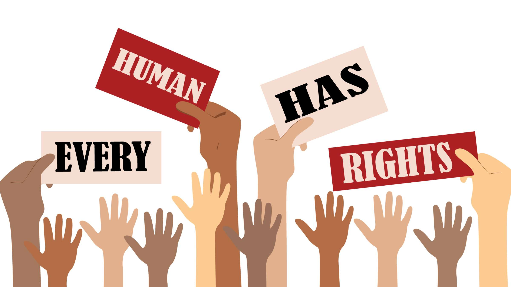

Recycling
Erfahre, weshalb das Recycling von Altmaterialien wichtig ist und wie viel unnötig weggeworfene Ressourcen dadurch gespart werden können.

Green IT
Du glaubst, dass du dich in deinem digitalen Arbeitsleben nachhaltig genug verhältst? Erfahre, wie viel Rechenleistung du mit einem nicht verwendeten Programm im Hintergrund oder einem voll ausgelastetem Postfach verschwendest und welche CO2 Bilanz dabei entsteht.

Erneuerbare Energien
Tauche ein in die Welt der erneuerbaren Energien und erfahre, wie sie zur Nachhaltigkeit beitragen.